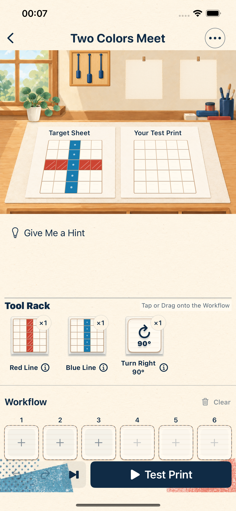
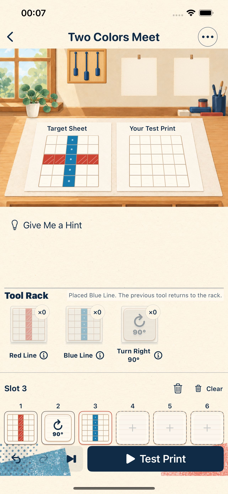
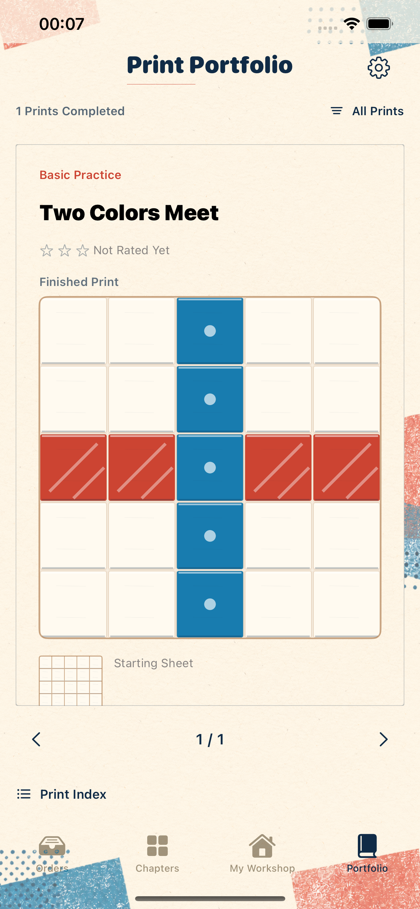
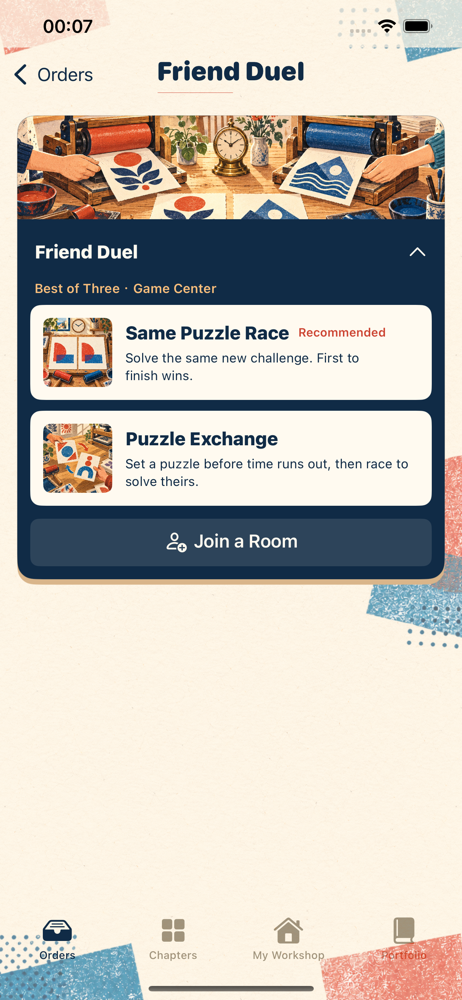
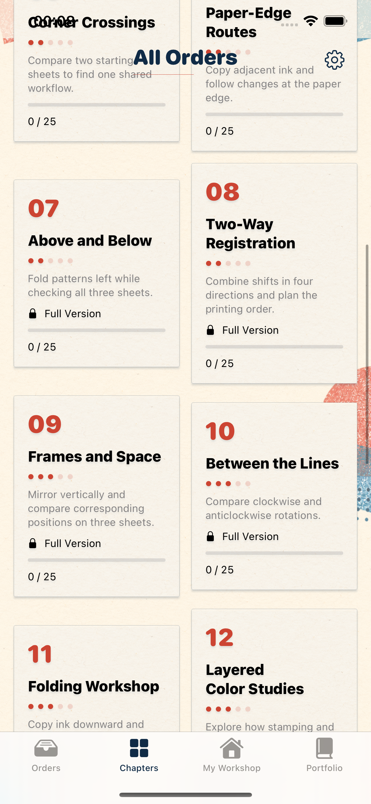
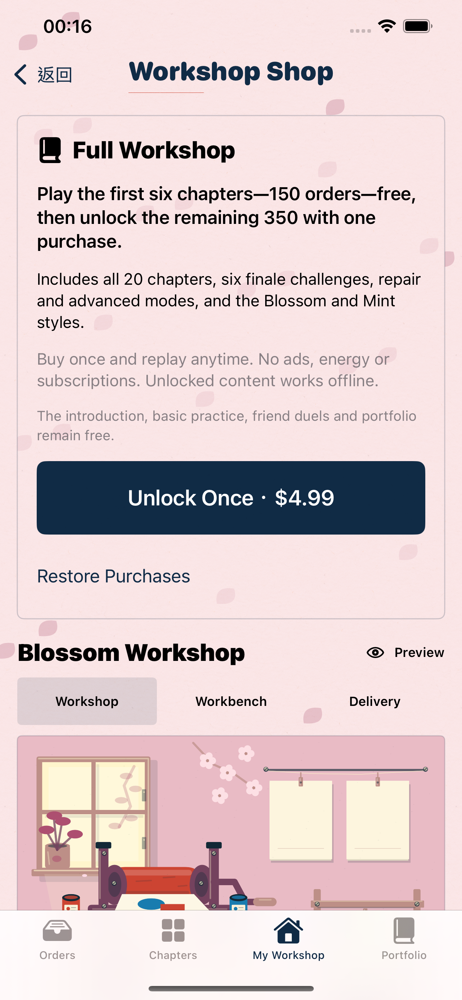

目標與試印
Match the target print.
Place tools. Match the print.
調好工具次序，慢慢印出答案。
一間小工房，一張目標樣張。讓油墨一層一層疊上紙面，試出你的印法。
A little workshop, a target print, and a line of tools. Layer ink onto paper and find an order that works.
正在載入TestFlight邀請。Loading the TestFlight invitation.
App Store 公開版準備中。Public App Store release is in preparation.
Every layer follows your order.
先看輪廓和顏色，再看看手上有哪些工具。
Study the shapes and colors, then look through your tools.
把工具放上工作線。旋轉、移位與疊印，先後次序會改變結果。
Place tools on the work line. Rotating, shifting and printing in a different order changes the result.
比較試印與目標，撤回或換個方法。新手練習不計時評星，慢慢來就好。
Compare the print with the target, undo a step or try another order. Beginner practice has no timer or star rating.
Inside the workshop
真實App截圖整理中。Actual app screenshots are being prepared.

Match the target print.

Find the right tool order.

Keep the prints you solve.

Friend play setup and lobby.

500 campaign puzzles across 20 chapters.

One purchase. Keep experimenting.
A print in motion
Questions from the workbench
前六章150份正式委託、12份基礎練習（包括雙張校對）、朋友對戰及作品集免費。12份練習沒有算進150份正式委託。
The first 150 campaign puzzles, 12 practice puzzles including two-sheet proofing, friend play and the portfolio are free. The 12 practice puzzles are additional to the 150 campaign puzzles.
完整版是非消耗型一次購買，不是訂閱。香港商店基準價HK$38，當地價格會在購買前顯示。它解鎖其餘350份正式委託、進階模式、六份終局及Blossom／Mint外觀。沒有廣告或體力，重新挑戰與重玩不另收費。
Full Game is a non-consumable one-time purchase. The Hong Kong reference price is HK$38; the purchase page shows your local price. It unlocks the remaining 350 campaign puzzles, advanced modes, six finale challenges, and Blossom and Mint appearances. No ads, no energy system, and no extra charge for replaying.
單人解謎可離線遊玩。下載、購買／恢復、iCloud同步及網上朋友對戰需要連接相應服務；網上對戰使用Game Center。
Single-player puzzles work offline. Downloading, purchases and restoration, iCloud sync, and online friend play need their respective online services. Online friend play uses Game Center.
進度保存在裝置，可手動備份。iCloud同步預設關閉；只有你開啟後，才會將已完成委託、作品、收藏印法、自製謎題及星數存入私人iCloud Drive的App容器並合併。未完成工作線、裝置設定、購買權限及研究記錄不隨此同步。以相同Apple帳戶恢復購買，是另一個步驟。
Progress stays on your device and can be backed up manually. iCloud sync is off by default. If you enable it, completed orders, prints, saved print methods, custom puzzles and stars are stored and merged in the app's private iCloud Drive container. Unfinished work lines, device settings, purchase entitlements and research logs are not synced. Restoring purchases with the same Apple account is a separate step.
App內的試玩研究記錄預設關閉，只有你開啟後才記錄。記錄只留在本機，上限1000項，開啟App時清理超過30日的記錄；不自動上傳、不同步至iCloud，也不包含在遊戲備份。你可關閉、清除或手動匯出，只有另行選擇分享時，接收者才會取得檔案。
In-app playtest research logging is off by default and records only after you enable it. Logs stay on the device, with a limit of 1,000 entries; entries older than 30 days are removed when you open the app. Logs are not automatically uploaded, synced to iCloud or included in game backups. You can turn logging off, clear it or export it manually. A recipient gets the file only if you separately choose to share it.
App Store公開版仍在準備中。本頁讀到已確認的公開TestFlight邀請後，才會啟用上方試玩連結。TestFlight是測試版本。
The public App Store release is still being prepared. The playtest link above becomes available when a confirmed public TestFlight invitation is provided. TestFlight offers a beta version.
Tell us where you paused.
五題就好。不需要姓名或電郵，也不需要付款。回饋只留在頁面記憶體，由你自行下載或複製，再交給開發者；不會自動提交。
Five optional questions. No name, email address or payment is required. Answers stay in page memory until you choose to download or copy them and send them yourself. Nothing is submitted automatically.
填寫試玩回饋 Playtest feedbackPrivacy and player support
選擇你的語言，查看資料處理方式及聯絡方法。Choose a language for privacy details and ways to get help.